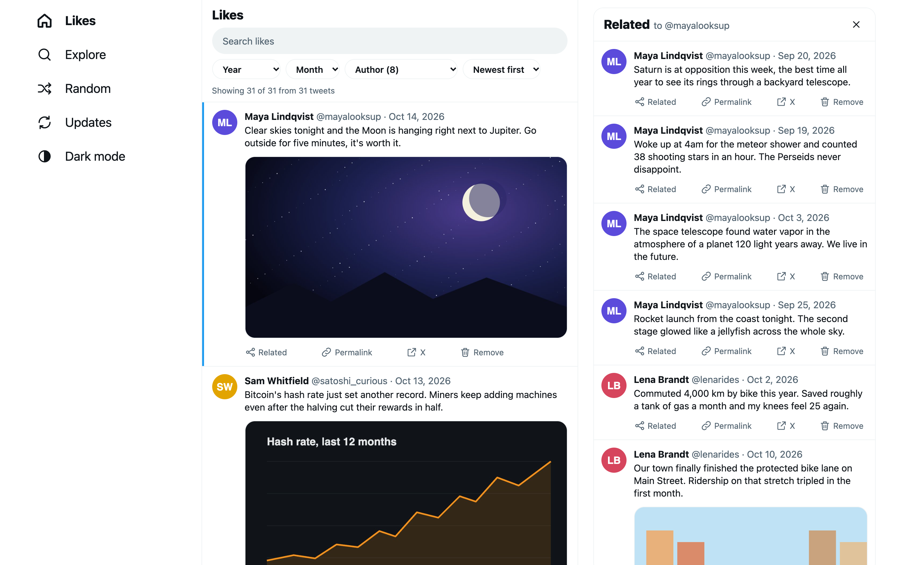
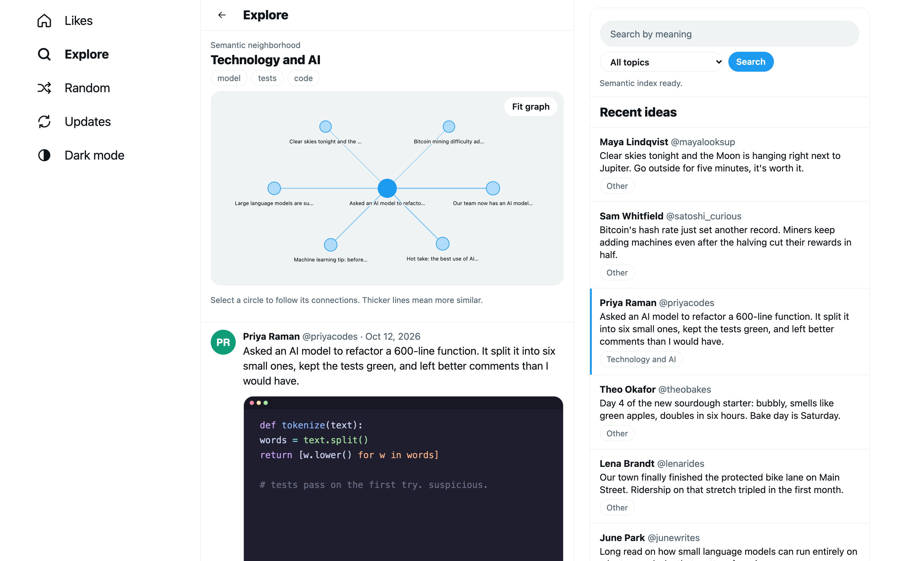
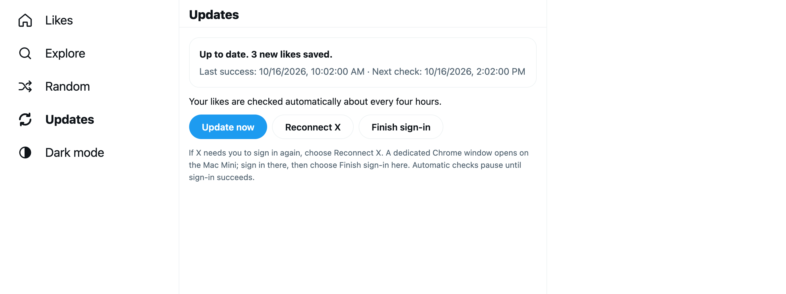
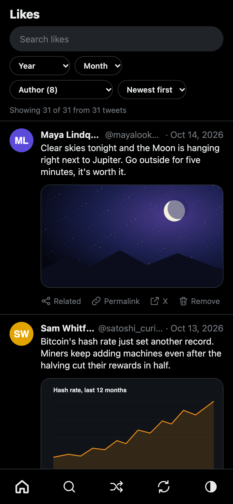
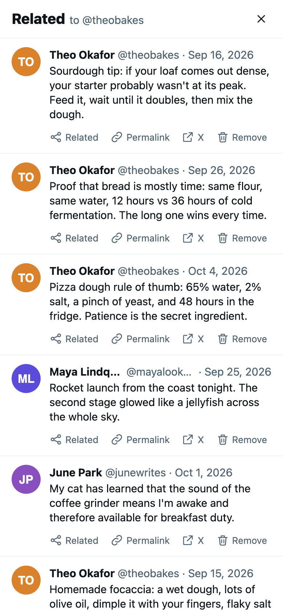
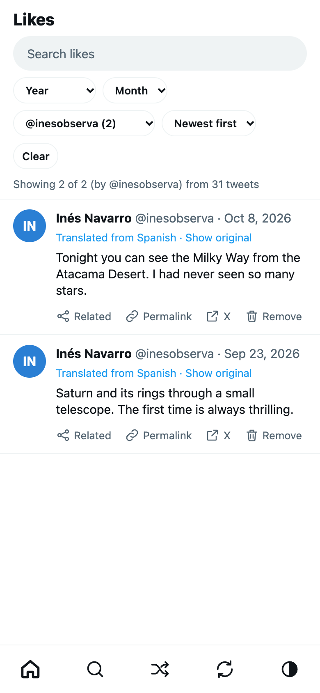
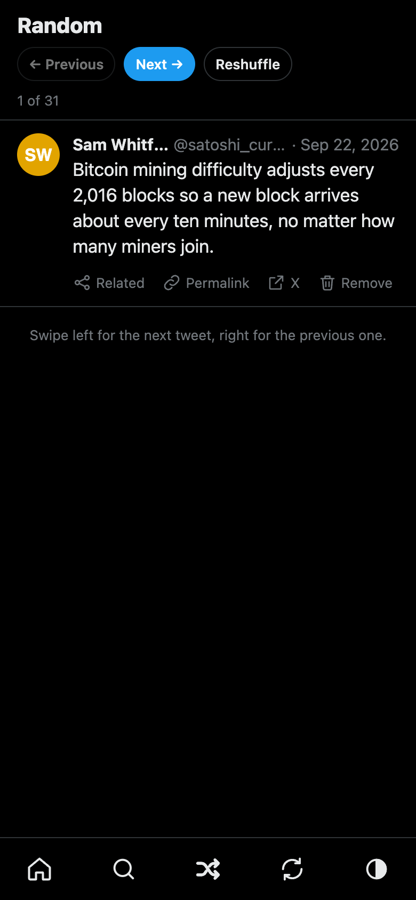

A private, searchable archive of everything you've liked on X (Twitter), including the photos, videos and long articles. It updates itself every four hours on an always-on Mac, and you browse it from your phone or laptop through a private link.

The app works the same on a laptop and a phone, in light or dark mode.






Screenshots use a made-up archive with fictional accounts. They're generated from the real app by npm --prefix service run screenshots.
Likes are a good record of what caught your attention, but X only gives you an endless scroll. Tweets get deleted, accounts go private, and images disappear. Search across your own likes is limited.
A web app laid out like X, with Likes, Explore, Random and Updates in the menu (or a tab bar on phones).
Search text, authors and article titles. Filter by year, month or author. Sort newest, oldest or shuffled. Your filters stay in the address, so links keep them.
Photos, videos and GIFs are downloaded. X articles open in the app with their formatting and images. Quoted tweets come along too.
Find likes with a similar meaning, even without shared words. Explore shows a graph of connected ideas, with stable links you can paste into notes.
Non-English tweets are shown in English, translated on your Mac. One tap shows the original.
Rediscover old likes one at a time. Swipe or use the arrow keys.
Delete a tweet and its media from the archive. Removed tweets are never imported again.
The Updates page shows the last result and has a button to check right away. If X signs you out, you reconnect from there too.
Load older likes (and optionally your retweets) from X's downloadable data export.
One Mac stays on and does everything. Your other devices only view.
The comic walks through the whole system in a dozen panels, from Homebrew to backups, and every panel names the real file or command.
This is a self-hosted tool for people comfortable with a terminal. Setup takes an hour or so. After that you shouldn't need the terminal.
Run these on the Mac that will host the archive. The full guide, with upgrade and recovery details, is in service/README.md.
Java 21 from Homebrew isn't on your PATH, so typing java won't find it. That's expected; the service points to it directly.
brew install node openjdk@21 clojure/tools/clojure python
brew install --cask google-chromeInstall Tailscale and sign in.
git clone https://github.com/erikseppanen/twitter-scraper.git ~/twitter-scraper
cd ~/twitter-scraperThe service only listens on 127.0.0.1:4318. Tailscale puts HTTPS in front of it. Pick one:
# Only your own devices running Tailscale can reach it
tailscale serve --bg http://127.0.0.1:4318
# Or reachable from any device (still needs the private link to get in)
tailscale funnel --bg --https=8443 http://127.0.0.1:4318Use your Mac's Tailscale address, including the port if you chose 8443. The installer downloads dependencies, runs every test, builds the app and registers a LaunchAgent that starts the service at login and restarts it if it crashes.
PUBLIC_ORIGIN=https://YOUR-MAC.YOUR-TAILNET.ts.net bash scripts/install-mini.shIt leaves a Twitter Archive bookmark on the desktop. That bookmark is your private link.
Open the bookmark, go to Updates, choose Reconnect X, sign in in the Chrome window that opens, then choose Finish sign-in. The first update starts on its own.
Download your data from X, extract it, and import it into a separate folder first. See the tutorial for moving it into place.
clj -M -m twitter-scraper.core --input ~/twitter-export --output ./archive-repairSend the private link (in .service/private-link.txt) to your phone privately, open it once, and bookmark the app. It signs you in and removes the secret from the address bar.
Treat the private link like a password. Anyone who has it can view your archive and use its controls. There are no separate user accounts. You can replace the secret at any time; see Access.
Never commit or upload .service/. It holds the secret and your X session.
Mostly, you just open the bookmark.
archive/, including its hidden .tweet-cache.edn, media/ and articles/. Media whose source is deleted can't be downloaded again.Everything is plain files in the project folder on the Mac.
| Folder | What it holds | Back it up? |
|---|---|---|
archive/ | Your likes (tweets.json), downloaded media, articles and the metadata cache. | Yes, all of it |
archive-previous/ | The version before the last update, for rollback. | Not a real backup |
.service/ | The private-link secret, X session, schedule and the cutoff, plus rebuildable caches for search and translation. | Privately, if you want to restore the setup |
Honest limits, so there are no surprises.
Automatic updates collect new likes from where they left off. They aren't a full historical backfill: X's Likes page stops loading eventually. For older likes, import X's data export.
Collection reads the Likes page in a real browser, so X page changes, login challenges or rate limits can break an update until the code is fixed. A failed update never touches your existing archive, and Updates shows what went wrong.
No. Related tweets and Explore use a small embedding model (MiniLM), and translation uses NLLB. Both run on your Mac. Their weights download from Hugging Face the first time. Matching works best in English.
Not as-is. The installer and the copy-on-write staging target macOS on APFS, and sign-in needs a visible Chrome window.
Tweets that were already gone when the importer reached them can't be recovered. Once a tweet is archived, its text and media stay even if the original is deleted.
The project is MIT. The NLLB translation model is CC-BY-NC-4.0 (non-commercial).